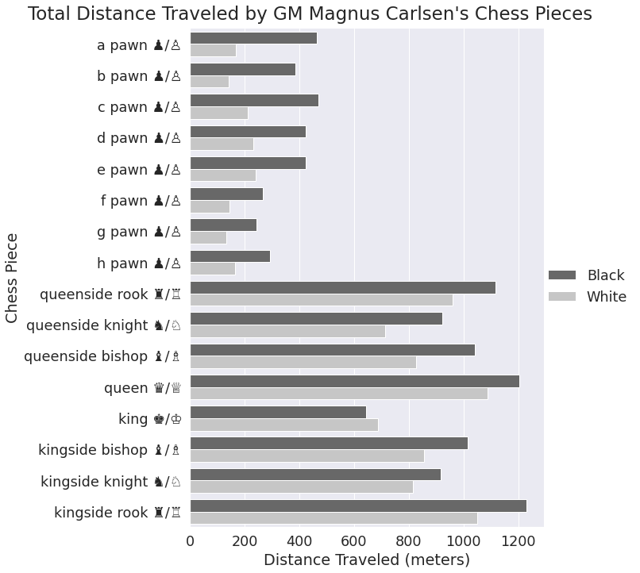
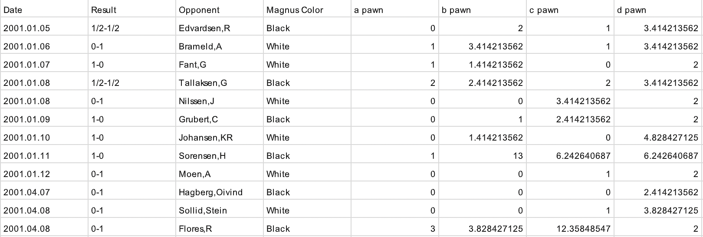

Scot Nielson
<<< back
Chess Displacement Visualization
Last spring, the BYU Data Science Club hosted a Data Visualization hackathon with a prize of $75 to whomever could get the most upvotes on a post to the r/dataisbeautiful Reddit channel. This is the visualization I made and entered to the competition, and which won first place with about 20,000 upvotes.
I had been playing a lot of chess at the time, and was thinking about how I often come across sports statistics making claims like "x player has thrown footballs a total of d distance in their career", or "this cyclist has biked around the world 4 times", etc. I wanted to apply that line of thought to chess and wondered how far the world chess champion, Magnus Carlsen, has physically picked up and moved his chess pieces. In this case I represented that distance in meters, which spurred a bit of controversy on the Reddit post, but that may have contributed to its spread.
I had to make several assumptions in developing this analysis and visualization. Firstly, I had to estimate the average size of the squares on chess boards and assume that those used by Magnus Carlsen over his career followed that distribution. I ended up using 2 inches for the average size of a square while recognizing that a significant percentage of chess games are played online, but that the majority of tournament-level games are played over the board, which made up the dataset.
A more thorough explanation of the steps I took are in the comments of the Reddit post. My data came from this website, which I wrote a short program to process in order to calculate the distances traveled by each piece, converting it to this tabular structure. I re-ran this analysis for a handful of other significant players, also posted on Reddit. Interestingly, the distributions appear pretty similar. I also made my analysis notebook publicly accessible on Google Colab, check it out to see how I made this visualization!